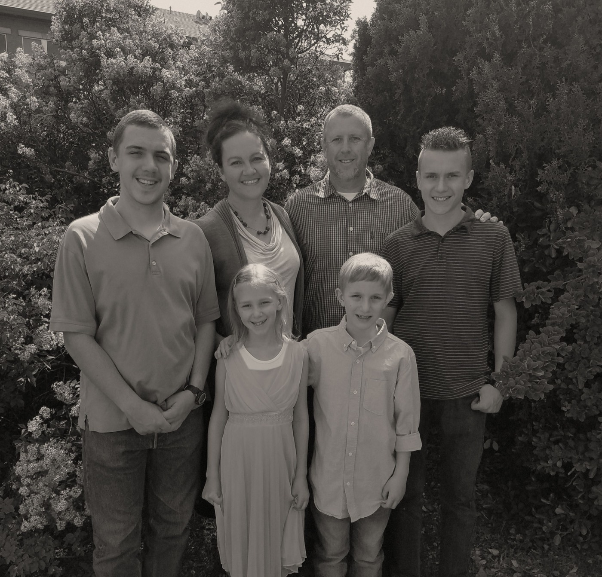

Dr. Glenn Brownlie
Dr. Glenn was born and raised in Prescott. After graduating from Prescott High School, he earned his Associate of Science degree at Yavapai College and completed his chiropractic education at Palmer College of Chiropractic in Davenport, Iowa, where he earned his Bachelor of Science and Doctor of Chiropractic degrees, graduating in February 1999.
He met his wife, Lisa, at Prescott High School. They have been married since 1997 and have three sons and one daughter. Dr. Glenn is Scoutmaster of Troop 7007 in Prescott, loves to hike and backpack all around Arizona, coaches youth sports and plays keyboard in his church’s worship band.
He loves introducing people to chiropractic and has adjusted patients from the age of 3 days to 101 years old.